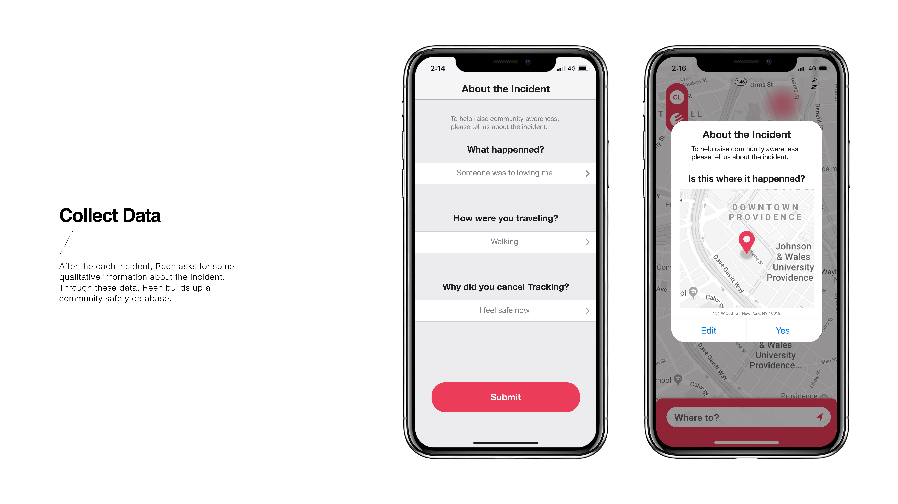
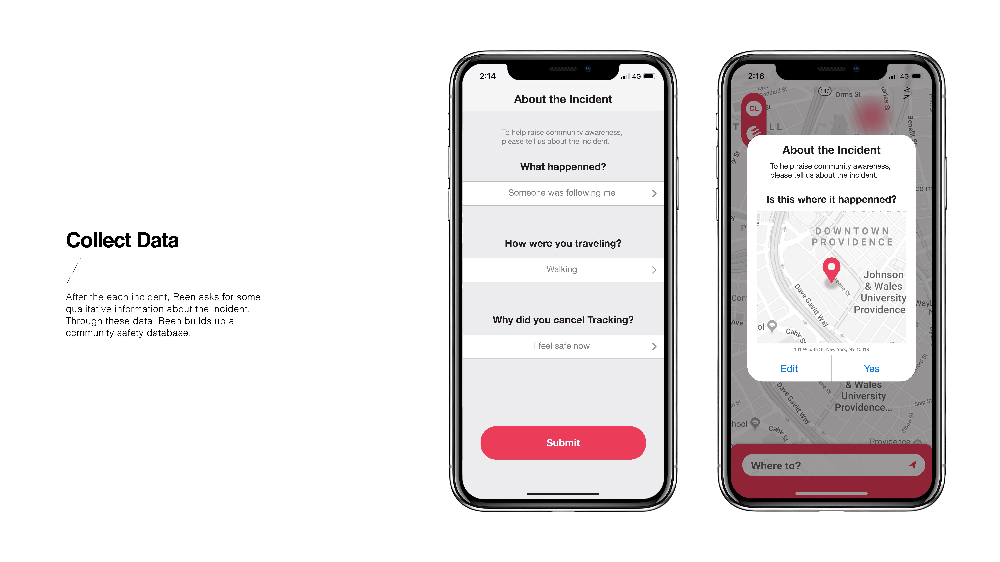

Reen
Industrial Design / 2018

Current self defense products
only protects you when something actually happened.
Could we be more proactive?
What is Reen?
Reen is a ring-like device that aims to keep users from any danger. Reen is connected to user’s phone, allowing it to call for help the instant anything happened and at the same time collect evidence by recording audio. Reen lets its users call for rescue in stages secretly, silently, in just moves of a finger.

Research
01. Interview & Survey
To understand what people think about crime and safety, we conducted interviews and we sent out online surveys. It was intriguing how people’s kindness of not wanting to bother others made them hesistant to call for help unless something actually happenned.

02. Observation Research
Mocking up a Sketchy Scene
To understand users’ reaction in a dangerous situation, we set up a TV booth to simulate the scenario of walking in a dark alley at night. We set up an arduino circuit and asked people to hold onto the board during the test. Our hypothesis is that poeple would clench their fist or want to grab on something when they get nervous; the red light in the circuit will light up when the button sensors pressure. Some people would hold the panel really tight, and some people were constantly pressing the button.

03. Interview
Hidden Personas in Our System

It’s not only about our users. There are three groups of people involved in a safety system: victims, polic officers, and criminals. To thoroughly understand the all three groups of people, we also interviewed polic officers since they are the people who have had direct contact with all user groups. They helped up clarify some confusions we had, and provided very insightful suggestions on our design.
Design Goals
After analyzing all the research and brainstorming, we concluded four principles that our design should achieve.

How Does Reen Work?
Scenario
⊹ ⊹ ⊹ Click to see what happens at each stage ⊹ ⊹ ⊹


 


Help is only one button-press away.

Not just a device, but an accessory that blends into your daily life.

The Team
Andy Cheng
Sophia Tseng